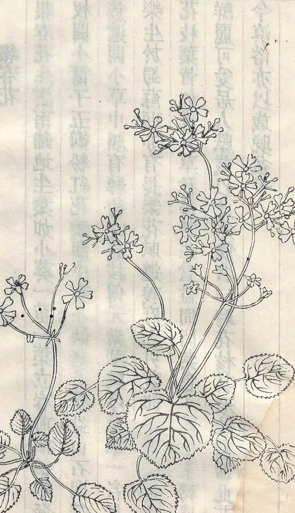

出处
- 书名
- 植物名实图考
- 作者
- 清 · 吴其濬
- 卷次
- 据影印本
报春花科 报春花属
Primula spp.
清·吴其濬《植物名实图考》 · 影印本


報春花，生雲南，鋪地生，葉如小葵，一莖一葉，立春前抽細葶，發杖，開小筩子，五瓣，粉紅花辨圓，中有小缺，無心盆盎山石間，簇簇遞開小草中，頗有綽約之致。按傅元紫華賦序：紫華一名長樂，生於蜀。蘇頲亦有長樂花賦。遵義府志引益部談資云：長樂花枝葉皆如虎耳草，秋後叢生盆盎間，開紫色小花，冬末轉盛，鮮麗可愛。居人獻歲以此爲餽，名曰時花。核其形狀，當卽此花。今滇俗亦以歲晚盆景。
繁体照录，异体字保留原样。
报春花生在云南，贴地生长，叶像小葵，一茎一叶；立春前抽出细茎，长出花葶，开小筒状花，五瓣，粉红，花瓣圆形而中间微缺，看不出花心。种在盆盎和山石之间，一丛丛接连开在小草里，很有柔美的姿态。按傅玄《紫华赋序》：紫华又名长乐，生于蜀地；苏颋也有《长乐花赋》。《遵义府志》引《益部谈资》说：长乐花枝叶都像虎耳草，秋后丛生在盆盎间，开紫色小花，冬末更盛，鲜丽可爱，当地人过年时拿它互相馈赠，称为“时花”。核对形状，应当就是这种花。如今云南风俗也在岁末做盆景。
原文逐句译出，供对照阅读。
图考名与今名并非一对一；未完成比对者标“待考订”。
| 海拔带 | 盛花期 |
|---|---|
| 1 800–2 400 m | 12 月–2 月 |
| 2 400–3 000 m | 2 月–4 月 |
| 3 000–3 600 m | 4 月–6 月 |
海拔每升高一段，花期相应推迟；出行以当年物候为准。
看花之后，把它变成一次出行。